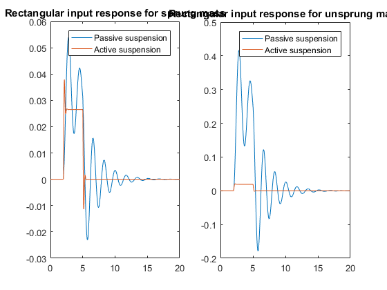
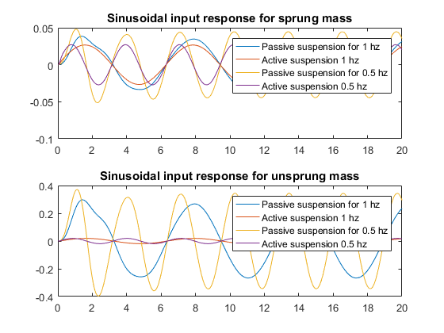

Contents
clear all
Ms=1250; Mu=150; h1=1; h2=2.2; Iu=200; Is=2000; ksl=50000;
g=9.8182; t=2.5; bsl=3000; ktl=350000; ktr=ktl; ksr=ksl; bsr=bsl;
Iu1 = Iu+Mu*h1^2;
Is1 = Is+Ms*h2^2;
A21 = -((ksl+ksr+ktl+ktr)*t^2/4-Mu*g*h1)/Iu1;
A22 = -(bsl+bsr)*t^2/(4*Iu1);
A23 = (ksl+ksr)*t^2/(4*Iu1);
A24 = (bsl+bsr)*t^2/(4*Iu1);
A41 = (ksl+ksr)*t^2/(4*Is1);
A42 = (bsl+bsr)*t^2/(4*Is1);
A43 = -((ksl+ksr)*t^2/4-Ms*g*h2)/Is1;
A44 = -(bsl+bsr)*t^2/(4*Is1);
A = [ 0 1 0 0;
A21 A22 A23 A24;
0 0 0 1;
A41 A42 A43 A44];
B = [ 0 0; -t/(2*Iu1) t/(2*Iu1); 0 0; t/(2*Is1) -t/(2*Is1)];
l = [ 0; Mu*h1/Iu1; 0; Ms*h2/Is1];
LQR controller design
rho = [16 16 40000 16 10^-9 10^-9];
Q = diag([rho(1:4)]);
N = 0;
R = diag([rho(5:6)]);
[K,S,e] = lqr(A,B,Q,R,N);
Finding tf for sprung and unsprung mass
A_cl = A-B*K;
s=tf('s');
L_X = inv(s*eye(4)-A)*l;
L_X_cl = inv(s*eye(4)-A_cl)*l;
tfs = L_X(1);
tfu = L_X(3);
tfs_cl = L_X_cl(1);
tfu_cl = L_X_cl(3);
Input Simulation
tsim = (0:0.01:20);
impulse = 9.81*((tsim-3)==0);
step = 9.81*(heaviside(tsim-2)-heaviside(tsim-5));
imp_res = lsim(tfs,impulse,tsim);
imp_res_cl = lsim(tfs_cl,impulse,tsim);
imp_resu = lsim(tfu,impulse,tsim);
imp_resu_cl = lsim(tfu_cl,impulse,tsim);
step_res = lsim(tfs,step,tsim);
step_res_cl = lsim(tfs_cl,step,tsim);
step_resu = lsim(tfu,step,tsim);
step_resu_cl = lsim(tfu_cl,step,tsim);
figure(1);
subplot(1,2,1);
plot(tsim,imp_resu,tsim,imp_resu_cl);
title('Impulse input response for unsprung mass');
legend('Passive suspension','Active suspension');
saveas(gcf,'plots/roll_imp_unsprung.png');
subplot(1,2,2);
plot(tsim,imp_res,tsim,imp_res_cl);
title('Impulse input response for sprung mass')
legend('Passive suspension','Active suspension');
figure(3);
subplot(1,2,1);
plot(tsim,step_res,tsim,step_res_cl);
title('Rectangular input response for sprung mass');
legend('Passive suspension','Active suspension');
subplot(1,2,2);
plot(tsim,step_resu,tsim,step_resu_cl);
title('Rectangular input response for unsprung mass');
legend('Passive suspension','Active suspension');


sinus1 = 9.81*sin(tsim);
sinus2 = 9.81*sin(2*tsim);
sin_res = lsim(tfs,sinus1,tsim);
sin_res_cl = lsim(tfs_cl,sinus1,tsim);
sin_resu = lsim(tfu,sinus1,tsim);
sin_resu_cl = lsim(tfu_cl,sinus1,tsim);
sin2_res = lsim(tfs,sinus2,tsim);
sin2_res_cl = lsim(tfs_cl,sinus2,tsim);
sin2_resu = lsim(tfu,sinus2,tsim);
sin2_resu_cl = lsim(tfu_cl,sinus2,tsim);
figure(2);
subplot(2,1,1);
plot(tsim,sin_res,tsim,sin_res_cl,tsim,sin2_res,tsim,sin2_res_cl);
title('Sinusoidal input response for sprung mass');
legend('Passive suspension for 1 hz','Active suspension 1 hz','Passive suspension for 0.5 hz','Active suspension 0.5 hz');
subplot(2,1,2);
plot(tsim,sin_resu,tsim,sin_resu_cl,tsim,sin2_resu,tsim,sin2_resu_cl);
title('Sinusoidal input response for unsprung mass');
legend('Passive suspension for 1 hz','Active suspension 1 hz','Passive suspension for 0.5 hz','Active suspension 0.5 hz');
